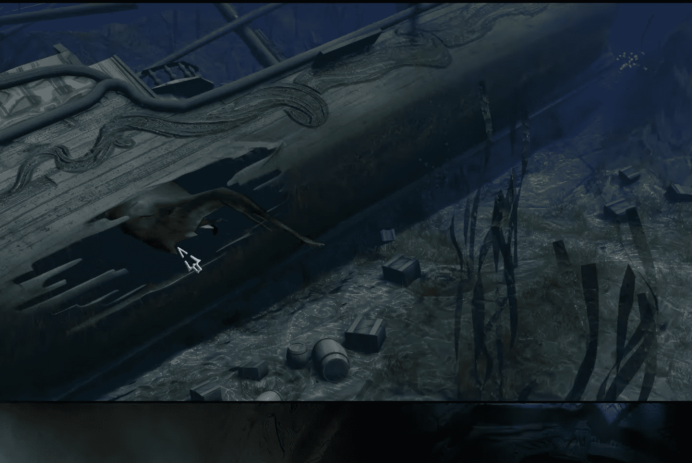

←Parte VII: Un Profundo espejo azul
Al principio de este capítulo, tendrás una breve conversación con Crow. Cuando se vaya, revisa el agua a la derecha. Notarás una cabeza que sobresale de vez en cuando. Míralo, luego trata de hablar con él, y finalmente trata de tomarlo y terminarás en una ciudad submarina. Cuando llegues a la cueva, mira todos los dibujos y luego saca un pólipo de la pared. Usa el pólipo en abril y se lo pondrá en la boca. Usa la pinza de empuje en abril y obtendrá algo de sangre
Deja la cueva y luego nada a la izquierda. Notarás una concha cerrada en el fondo del mar. Ábrela y toma la perla negra que ves. Nada hasta la ciudad y toma algunas de las cosas verdes brillantes que ves en las paredes. Vuelve a la cueva y mezcla la materia verde con la sangre de April y luego usa la perla negra en la mezcla para obtener una perla dorada. Usa la perla en abril y se la tragará. Vuelve a la ciudad y habla con el tritón sobre todo y eventualmente aprenderás que el verdadero nombre de los tritones es Maerum.
Cuando termines, trata de tomar la lanza. Habla con la Reina de nuevo y pregúntale sobre el Waterstiller. Toma el cristal sentado en el nicho junto a la lanza y luego muéstraselo a la reina y ella te permitirá mantenerlo como un regalo. Salgan de la ciudad y si miran a la izquierda, verán enormes hebras de algas. Quiten las algas del camino y encontrarán un segundo cristal. Muévete de nuevo y April descubrirá una entrada a la cueva. Entra y toma los dos cristales que puedes ver en el fondo del mar junto al altar.
Mira el altar de piedra y tendrás que resolver otro rompecabezas. Para resolverlo, alinea los anillos con los signos opuestos. Por ejemplo, mueva el anillo de fuego para que esté frente a la etiqueta de agua. Mueve el anillo de pájaro para que esté frente al pez y el anillo de Maerum frente a la pirámide de un ojo. Esto resolverá la primera mitad del rompecabezas.
La segunda mitad del rompecabezas se puede resolver poniendo el primer cristal en la parte inferior derecha del brazo del altar y haciéndolo de manera que el lado del arpón del cristal se enfrenta a la etiqueta del arpón y el lado del pez se enfrenta a la etiqueta del pescado. Pon el cuarto cristal en el punto inferior izquierdo y haz que las imágenes coincidan con las etiquetas de la izquierda y la derecha. Hacer lo mismo con los otros dos cristales, y cuando se hace correctamente, la piedra en el centro se abrirá. Si no, es posible que tenga que rotar o mover algunos cristales hasta que lo haga.
Deja la vista y mira los dibujos en la pared y luego mira el símbolo en el lado izquierdo de la habitación. Vuelve a la ciudad y cuéntale a la Reina tu descubrimiento. Acabarás mostrándselo. Cuando termines de hablar, toma la lanza y ve al naufragio, que se encuentra más allá de la cueva de burbujas.
Una vez allí, intenta entrar y aparecerá una mordaza. Usa la lanza y April la matará. Saca un diente de su boca y luego entra en el naufragio. Toma el talismán que está a la vista y luego muéstrale el diente y el talismán a la Reina. Ve al santuario y usa el talismán en el símbolo de la pared para abrir un nicho oculto. Busca en el nicho para encontrar una pieza del disco. Tómelo para descubrir que se ha dividido por la mitad. Muéstraselo a la Reina y aprenderás que aún tienes una cosa más que hacer antes de que te llame el Waterstiller. Explica la relación entre los Maerum y los Alatien a la Reina y ella te llevará a la isla más cercana para que April pueda intentar hablar con los Alatien. Aquí termina la séptima parte.
Parte VIII: Reunificación
Al llegar a la playa, recoja la cuerda del suelo cerca de abril y luego siga el camino a la izquierda para descubrir algunas ruinas de una ciudad antigua. Ata la cuerda al árbol y baja por el agujero. Terminarás encontrando una caverna subterránea. Baja hasta el fondo y ordena a través de los escombros para encontrar una llave. Tómelo y subir de nuevo a la superficie. Toma la cuerda hacia atrás y luego ve a la playa. Convoca a Crow y habla con él, y luego recógelo y úsalo en la selva.
Diríjase a la selva y vaya al volcán. Mire en la boca de la cara para encontrar una cerradura, un símbolo y una lente de algún tipo. Cambia los símbolos con la tecla y mira la lente cada vez que la giras hasta que vuelves al símbolo de tilde. Tome la llave y deje la vista y mire el gran árbol en el fondo para habilitar una nueva área en el mapa. Salga de aquí y vaya a la nueva área.

Intenta caminar por la zona y acabarás despertando a algunos Stickmen. Habla con Stickman Wick un rato y cuando termines, sube por el sendero del árbol y terminarás en una situación delicada. Mira la ballesta y luego baja y pregúntale a Wick. Mira la base de la estatua cercana. Cuando se trata de esta estatua y a los demás les gusta, realmente tienes que prestar atención y usar un poco de imaginación para averiguar de qué estoy hablando.
De todos modos, pon la llave en el ojo de la cerradura triangular y establecer el anillo superior girando la llave a la izquierda hasta que un símbolo que parece una manzana se alinea por encima del ojo de la cerradura. Ajuste el anillo inferior girando la llave a la derecha hasta que un símbolo que se parece al número cinco esté alineado debajo del ojo de la cerradura. Agarra la llave y vete a la playa.

Ir a través del arco en el lado derecho y la cabeza hasta el camino hacia el acantilado. Mira la base de la estatua y haz lo que hiciste la última vez, excepto establecer el anillo superior a la forma de flecha y el anillo inferior a la forma número cinco. Toma la llave y ve a las ruinas.
Mira la base de la estatua y fija el anillo superior a la forma del volcán y el anillo inferior a la forma de la manzana. Sal de aquí y vuelve a los Stickmen. Use el ícono de conversación en el oído de la estatua y si coloca los anillos en las estatuas correctamente, la voz debe llegar a Q'aman. Habla con él un rato y luego ve al Claro del Gigante Silencioso para conocerlo cara a cara. Háblale de todo y vuelve a la playa. Atraviesa el arco y trata de ayudar a la criatura cangrejo a salir. Primero usa el ícono de la mano y luego usa el ícono de conversación. Descubrirá que le duele. Vuelva con Q'aman a ver si ayuda al pobre Orlowol. Sigue a April y ayuda al pequeño, que parece haberse quedado atascado en su viejo caparazón desde que no se deshizo de él cuando debía hacerlo.
Sube por el acantilado y habla con Q'aman de nuevo. Descubrirás que los peces no pican porque no tienen un señuelo. Dale la envoltura y luego vuelve con los Stickmen. Dile a los Stickmen que es seguro volver al trabajo. Se irán, así que síguelos hasta el árbol. Habla con ellos y luego regresa con Q'aman. Toma el sedal y la espina de pescado y luego ve a donde están trabajando los Stickmen. Combina la cuerda y el hueso de pescado y luego muéstrale el sedal a Wick. Terminarán de hacer el cañón, y cuando lo hagan, pregúntales si puedes probarlo. Utilice el gancho de agarre en el cañón y luego tire de la palanca cercana y verla volar!
Habla con el alatien al otro lado del acantilado sobre todo y luego mira la corriente ascendente. Beba la luz como una poción de hojas y luego use la poción de viento en la corriente ascendente. Hable con el alatien un poco más y diríjase al túnel. Ve al castillo y habla con el vigilante. Tendrás que responder a cuatro preguntas sobre cuatro fábulas, los cuentos de Mares, Estrellas, Vientos y Regreso a casa. Hable con la niña alatien para su historia, la mujer alatien a la derecha para la suya, el alatien cerca de la salida para el suyo y el alatien cerca del acantilado para el suyo. Cuando termines, vuelve a hablar con el vigilante y responde a sus preguntas.
Las respuestas son las terceras opciones, así que cuando hayas contestado las preguntas correctamente, ve a la torre y habla con el Cajero sobre todo. Observa las secuencias y cuando encuentres a April nadando, aparta la arena del camino cerca del fondo de la estructura y luego mira el pequeño orificio. Trate de hablar con él y el gran orificio cerca de la parte superior se abrirá. Vaya dentro y luego trate de tomar una protuberancia circular para despertar al dios dormido. Hablen con él de todo y obtendrán una joya de él. Vean las secuencias y conocerán a la gente oscura. Habla con la Persona Oscura sobre todo y después, a April se le permitirá dormir. Despierta y sal para encontrar una Marcuria desierta...
Parte IX: Sombras
Intenta dirigirte a la ciudad y te interrumpirá una secuencia de película en la que una extraña criatura emerge del agua. A Shift se abrirá justo a tiempo para que April escape. Terminarás en la Catedral de Stark. Hable con el Padre Raúl un rato y luego regrese a la Casa de la Frontera. ¿Me pregunto qué está pasando? Emma está de pie y Fiona está en el sofá llorando. Emma intentará decirle a April que corra, pero es demasiado tarde. Un hombre baja de las escaleras y el mismo Gordon Halloway entrará poco después. Puedes decir lo que quieras, pero Gordon hará que el sirviente mate a Emma
Un chico entrará, y se abrirá una brecha entre el sirviente y Gordon, permitiendo a April correr arriba. Habla con Zack, y sabrás que vendió a April. El sirviente subirá y disparará a Zack.
April entrará en su apartamento, así que cuando tengas el control, mira por la ventana y haz clic en el río para que April salte. Cuando salga, beba la poción de invisibilidad y pase por delante del guardia y vaya al Fringe Caf. Los sirvientes arrinconarán a April... casi. La puerta misteriosa se abrirá y aparecerá un Turno. April pasará por ella y te encontrarás en la casa de una anciana. La anciana es Lady Alvane. Aprenderás que lo que pasaste no fue un cambio porque April no entró en sus sueños. Tampoco estás en Stark ni en Arcadia, sino en el limbo intermedio.
Habla con Lady Alvane por un tiempo y sabrás que Emma no fue asesinada, pero estaba herida y que todos están enojados con April por no decirles la verdad. Después de la conversación, April volverá a través del vórtice y el capítulo terminará.
Parte X: Renacimiento
Te encontrarás de vuelta en Arcadia, a las afueras del Journey Man Inn. Ve al City Green y habla con Abnaxus y obtendrás la última pieza del disco. Ir al Enclave y en la zona justo antes de la biblioteca, es necesario colocar las cuatro piedras en su posesión en los huecos circulares. La piedra Venar entra en el hueco izquierdo, la piedra Dark People entra en el hueco inferior, la piedra Banda entra en el hueco derecho y la piedra Alatien entra en el hueco superior. Escucharás algunos sonidos molestos y April comentará que algo está mal.
Invoca a Crow y úsalo en el dragón sobre el hueco izquierdo para que picotee a la paloma. Mira la secuencia y el dragón derretirá las cuatro piedras y se combinarán para hacer el disco. Ve a la biblioteca y habla con Minstrum Yerin y sabrás que Tobias fue asesinado por agentes de Vanguard. Ve abajo e intenta girar la rueda solo para descubrir que está atascada. Pregúntale a Yerin y te dirá que la rueda está atascada porque las esclusas están cerradas. Irá a desbloquearlos por ti, así que gira la rueda y drena la piscina. Baja las escaleras y toma el disco. Salga de la biblioteca y trate de volver a la ciudad, solo para descubrir que el ejército Tyren ha bloqueado la carretera. Cuando las cosas comienzan a parecer sombrías, un Cambio aparece y estamos en camino a la parte once.
Parte XI: Parentesco
April se encontrará en el estudio. Coge el pincel y la paleta y úsalo en el lienzo. April pintará la escena desde el comienzo del juego y verá como aparece un Shift. Terminarás allí y mamá sigue aquí, pero se está muriendo. Observen las secuencias y la Madre morirá, pero el huevo eclosionará y una nueva Madre nacerá. Cuando todo esto termine, aparecerá otro Turno y April se encontrará de vuelta en Stark.
Ve a los muelles y habla con Burns Flipper. Tendrás tu identificación falsa y después de eso, dale a Flipper el mapa estelar y tendrá un amigo que lo descifrará. Salgan de aquí y vayan al Metro Circle. Vayan a los ascensores del lado izquierdo y suban. Una vez fuera, hay un basurero cerca de la pantalla de tu computadora con una caja de pizza que un chico acaba de poner ahí. Tómalo y luego mira el cartel de la tienda de ropa a tu izquierda. Entra y April comprará ropa nueva. Al lado de la tienda hay un servicio de transporte, súbete y te dirigirás a otra parte de Newport.
Una vez que esté fuera, hable con el policía cercano y aprenderá la ubicación del edificio MTI. Vaya a la derecha y baje a la calle. Dale a Gerald el recepcionista la caja de pizza (puede que tengas que hablar con él primero) y April actuará como una chica de pizza, lo que te permitirá llegar a la oficina de McAllen. Una vez arriba, intenta abrir uno de los cajones de su escritorio y sonará una alarma. McAllen vendrá, y puedes elegir lo que quieres para las opciones de conversación, porque eventualmente serás llevado a su laboratorio. Mira la secuencia y elige las opciones que quieras. Cuando McAllen se vaya, un monstruo mutante atravesará la cámara y perseguirá a April.
Date prisa y mira la computadora y luego abre la puerta. Ve a través de ella y luego sal a la cornisa a la parte inferior derecha. Justo cuando parece que el monstruo mutante tiene a April, Cortez aparece de la nada y lo despacha. Hable con Cortez y después, McAllen aparecerá. Vea las secuencias, y aprenderá que McAllen y Cortez son parte de los Draic Kin. Cortez morirá, y lo sabrás porque a medida que se transforman en dragones, el reloj que Brian te dio dejará de funcionar, y ese reloj se suponía que era el corazón de Cortez. Cuando tengas el control de April, vuelve al laboratorio y mira la computadora de nuevo. Abre la cámara de contención y podrás recuperar el disco.
Coge el disco y deja Metro Circle y vuelve a los muelles. Parece que la Vanguardia también estaba aquí, porque tomaron el mapa y dejaron al Flipper en mal estado. Hizo una copia del mapa, y aprenderás algo sobre el Morning Star. Luego morirá, así que vuelve a los ascensores de Metro Circle. Al lado de la lanzadera, verá unos tubos de elevación. Súbase a ellos y hable con la recepcionista. Regístrate como colono y pronto, serás llevado al Morning Star y al final de este capítulo.
Parte XII: Tierra de ensueño
Una vez que te encuentres en el pasillo principal, intenta entrar en el baño de mujeres para encontrarlo cerrado. Ve al baño de hombres, mira el dispensador de la pared izquierda y luego usa la tarjeta para conseguir algo llamado Instant Heat. Mueva el bote de basura para destapar un respiradero. Use la moneda para aflojar la parrilla y luego retírela. Entra y mira la pequeña pantalla a la izquierda de las piernas de April. Sal a la salida 1. Mira la cámara y luego saca el cable de ella. Vuelve al eje y esta vez mira la pantalla y ve a la salida 2. Esta es la sala de seguridad. Pon un poco de calor instantáneo en el café del guardia y luego el guardia regresará y llevará a April de vuelta a la sala principal.
Vuelva a la sala de seguridad. Espere hasta que el guardia beba su café y luego se vaya debido a un poco de "emoción" y April saldrá de la ventilación. Mira el mapa en la pared. Para trabajar esto, cuando le digas a un guardia que se vaya, irá al área de descanso. Cuando quieras que alguien vuelva a trabajar, haz clic en el área de descanso y diles que se vayan. Ordena al guardia del bloque de celdas que salga de servicio y mire la computadora al lado del mapa para averiguar dónde está detenido Adrian. Busquen en el abrigo del guardia y encontrarán una llave. Salgan de la sala de seguridad por la puerta y entren en el pasillo lejano a los bloques de celdas.
Ve al Bloque 5 y abre la cerradura. Usa la llave y Adrian emergerá. Te seguirá por los pasillos por el momento. Vuelve a la sala de seguridad, ordena al guardia de la zona de descanso que vaya a trabajar, y luego ordena al guardia de la esclusa de aire que salga de servicio. Salir y entrar en el corredor lejano y salir a la derecha para llegar a la esclusa de aire.
Mire el panel de control y luego presione el botón encendido para abrir una cápsula que contiene una máquina llamada vaina. Mira el panel en la cápsula y luego intenta presionar el botón para aprender que necesita un nuevo filtro de oxígeno. Ve a la sala de seguridad, haz que el guardia vuelva a la esclusa de aire, y ordena al guardia de la bahía de carga que se retire. Salir y entrar en el pasillo de la izquierda para llegar a la bahía de carga.
Mire el terminal de la computadora y luego úselo para aprender el número de los filtros. Mueva el cursor hacia donde dice Incluso más cajas y mire. Encontrarás los filtros de oxígeno, así que usa el icono Mano para obtener uno. Vuelve a la sala de seguridad y pon al guardia de carga de servicio y ordena al guardia de la esclusa de aire fuera de servicio. Ve a la esclusa de aire y usa el filtro de la cápsula y presiona el botón encendido en el panel de control. ¡Mira las secuencias y el último capítulo te espera!
Parte XIII: El viaje más largo
Camine hacia el desierto. Mire la torre si quiere y luego comience su viaje a la torre. Pronto, podrá comenzar su primera prueba. Cuando aparezca Chaos, combina la poción Bind Magic con el talismán y usa el talismán en Chaos para completar la primera prueba.
Mira el abismo lejano y April trabajará automáticamente hacia el otro lado. Dirígete a la torre para llegar a tu segunda prueba. April se transformará en su yo más joven, y cuando puedas, usa el anillo de oro del padre de April. Entrará en razón y todo será perdonado. Diríjanse a la torre de nuevo hasta que lleguen al cañón.
Invoca a Crow (que vendrá a través de un vórtice para conocerte), habla con él un poco y úsalo en la torre (la pequeña cosa redonda en la parte superior de la pantalla). No encontrará ninguna manera de entrar, así que úsalo en las estructuras debajo. Encontrará el Pozo de Hacer. Úsalo en el cañón de niebla y no encontrará nada debajo de la niebla. Úsalo en el Pozo de Fabricación y traerá algo de agua. Úsalo en el cañón y pronto se formará un puente.
Cruce el puente y en la parte superior del pozo, utilice el icono de la mano en el pozo para mirar dentro. Utilice el disco en el pozo y ver la secuencia. Cuando puedas, usa el icono de Mano en la mano que aparece en el pozo y Adrian se unirá a ti aquí. Mira las secuencias, y Gordon Halloway llegará muy pronto. Cuando Adrian y Gordon empiecen a pelear, usa el talismán de Gordon y sus dos mitades se unirán y aprenderás que Gordon será el nuevo Guardián, no April. Mira las secuencias y el capítulo terminará aquí.
Epílogo: Hilos
Lady Alvane cerrará la historia, y podrás ver a un viejo amigo, que resulta ser Crow. Supongo que Lady Alvane es en realidad April Ryan. Mira el final y si quieres, mira los créditos. Después del juego, el Libro de los Secretos se desbloqueará y podrás acceder a cosas como tomas falsas, arte, etc.